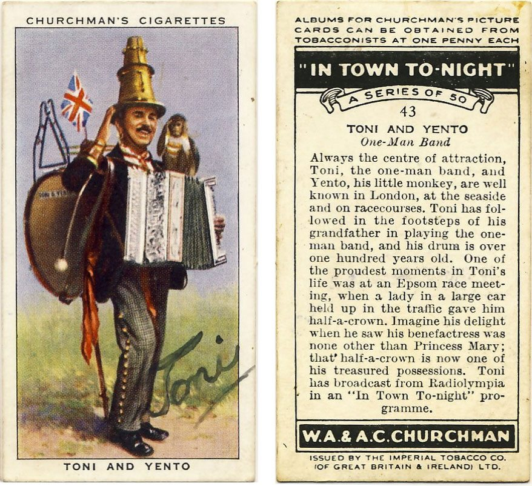

Thursday, May the 24th, 2012
back to: title, date or indexes

Via John Tingey's site dedicated to the excellent W Reginald Bray, “The Englishman Who Posted Himself And Other Curious Objects”. Click to enlarge.